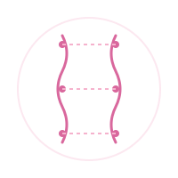
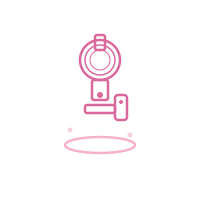
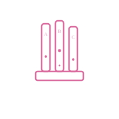
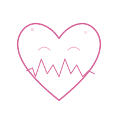

Técnicas laboratoriais
Coleta, organização de amostras, biossegurança e protocolos de rotina.
Portfólio de Biomedicina
Estudante de Biomedicina na UNINORTE com foco em criar potencial profissional, praticar metodologias laboratoriais e impactar a saúde com atitude responsável.


Estudante de Biomedicina na UNINORTE, dedicada a aprender com rigor científico, responsabilidade e foco em ambientes de saúde.
Em andamento
Para estágio
Análises clínicas
Sou dedicada aos estudos, organizada, responsável e comprometida com meu crescimento pessoal e profissional. Tenho interesse em áreas relacionadas à saúde, atendimento ao público e rotinas administrativas.
Quem sou
Estudante de Biomedicina (1º período) na UNINORTE, com grande interesse em aprendizado contínuo e desenvolvimento profissional. Atualmente em busca da primeira oportunidade para colocar em prática conhecimentos acadêmicos e desenvolver habilidades no ambiente de trabalho.

Investigando a vida através da biomedicina.
Habilidades
Coleta, organização de amostras, biossegurança e protocolos de rotina.
Apresentações, relatórios e clareza ao compartilhar resultados.
Trabalho com prazos, checklist de atividades e disciplina acadêmica.
Atendimento ao público e cuidado com a experiência de pacientes e colegas.
Adaptação a novas disciplinas e tecnologias do ambiente biomédico.
Equilíbrio entre estudos, projetos e desenvolvimento de carreira.
Certificados
Aprendizado de boas práticas de proteção em laboratórios e manuseio de materiais.
Fundamentos de técnica de amplificação de DNA com foco em diagnóstico molecular.
Desenvolvimento de habilidades para apresentação de resultados e educação em saúde.
Formação
Curso de fev de 2026 a dez de 2030 na UNINORTE, focado em diagnóstico, pesquisa e práticas laboratoriais.
Atenção a detalhes, aprendizado rápido, organização, responsabilidade e interesse em saúde e atendimento ao público.
Buscar primeira oportunidade para aplicar conhecimentos acadêmicos e contribuir positivamente com a equipe.
Projetos

Análise prática de amostras e identificação de microrganismos para fortalecer a rotina de laboratório.

Criação de apresentação visual de resultados com foco em mensagem clara para professores e colegas.
Resolução de estudos de caso com ênfase em interpretação de resultados e tomada de decisão.
Vamos nos conectar
Estou aberta a projetos acadêmicos, parcerias e oportunidades que valorizem a ciência e a experiência humana.